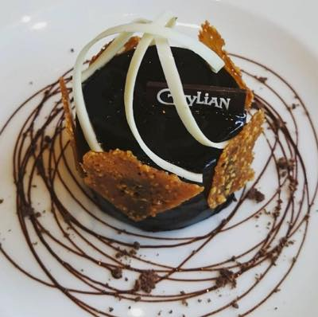

짤방은 전에 댕겨온 롯데월드몰 길리안 쪼코 카페 :3
초코무스 & 파나코타 맛있어요오오 ㅜㅜ
오늘 있었던 일
동생곰과 점심약속 + 면세점 구경 겸사겸사
서울역에서 지하철을 타서 용산역으로 향하고 있었음
평일 오전시간이라 지하철은 한산했는데
갑자기 왼쪽에서 젊은 여자목소리로 굉장히 크게 "NO NO" 란 소리가 나서
지하철에 있던 사람들 시선이 죄다 그쪽으로 쏠림
대충 보아하니
한국 관광온것 같은 18살 - 20대 초반으로 보이는
중국 또는 홍콩(??) 아가씨 두분이
50대 초반정도로 보이는 한국 할아버지가 강권하는 음료수인지 뭔가를
받을수 없다면서 굉장히 곤란해 하고 있는 상황 이었다.
이게 여자애들 쪽에서 먼저 길을 물어서 대화가 시작된건지
아님 걍 관광객들에게 친절하게 대해야 한다는 사명감에 불타서
이 한국 할아버지가 (한국어로)대화를 시도한건지는 잘 모르겠지만
여자애들이 한사코 안받겠다고 거절하는데도 어른이 주는건 받는게 예의라면서
집요하게 권하는 상황이 서울역에서 용산역 도착할때 까지 이어졌다
전후사정을 모르니까 그냥 듣고만 있었는데
우선 한국어를 전혀 모르는것 같은 애들에게
목소리는 대따 커서 쩌렁쩌렁 울리고 반협박조 말투로
- 이게 한국의 정이란거야!!
- 한국에서는 어른이 주는건 받는게 예의야!! 이건 내가 공짜로 주는거야!! 언능 받어!!
기타등등이 시전되니 슬슬 짜증이 나고 있는 그런상황;;
아 젭알 사람이 NO 라고 말하면 NO 라고 알아들어줘요 ㅡㅡ;;;;
게다가 할배가 뭐라 그러는지 전혀 못알아 듣고있는거 같은데;;;;
근데 공교롭게 용산역에서 그 여자애 둘 / 할배 / 나 일케 셋이 동시에 내림
개찰구로 올라가는 에스컬레이터에서
여자애둘
할배
바로뒤에 나
이런 순서로 서서 올라가게 된거다;;
올라가는 내내 애들 뒤로 맨 백팩을 쓰다듬는 시늉을 하면서
어디 관광갈거냐 / 어른이 주는건 받아라
끈질기게 강권을 해대고 여자애들은 어떻게 해야할지 모르겠다는 표졍으로 받은 봉투를 다시 돌려줄려고 하는 상황을
썩은표정으로 지켜보다가
그중 한명 여자애랑 눈이 마주쳤다
그 순간 짜증이 확 나서 여자애들에게
"Hey! If you don't want, You don't have to take it. Throw away!!
and ignore him!"
(저기 그거 받기 싫으면 안받아도 괜찮아! 걍 버려버려 그리고 이사람 무시해)
라고 말해버림;;
남의 일에는 끼어드는게 아닌데.......OTL
그냥 매몰차게 필요없다고 거절 못하는 그 두명(에 한국어를 전혀 몰라 무슨상황인지 파악도 안되는거 같은 눈치;;)
+
분위기로 봐서는 이 두명 관광하는곳 끝까지 따라갈거 같은 할배
조합에 내 승질대로 질러버렸음 ㅡㅡ;;;
이 할아버지 흠짓 놀라더니
"아...아는사람이야? 친구야?" 라고 나에게 물어보길래
"네 -_-" 라고 대답해줬다.
여자애들이 기다렸다는 듯이 나에게 다가와서
"is he a bad guy?" - 저사람 나쁜사람이냐고 묻는데 ㅋㅋㅋ
이게 참 일본서 학교다닐때 우에노 공원 편의점 알바를 했었는데
가끔 단체로 놀러오는 한국아저씨들 계산대 앞에서 서로 자기가 계산하겠다고 언성높일때
같이 일하던 일본친구들이 지금 저사람들 싸우는거냐고 잔뜩 겁먹고 나에게 물어보던 기억이
오버랩 되면서 헛웃음이 나왔다 ㅋㅋㅋㅋㅋㅋㅋ
이거시 한쿡 아저씨들의 츤츤함......OTL
해서 나쁜사람은 아니고. 단지 너희들에게 잘해줄려고 하는건데.
권유가 지나친 사람이다. 나이드신분들 가끔 저러셔
라고 상황 설명을 하고 있었음.
그랬더니 더 웃긴건 갑자기 그 할아버지는 부리나케 반대방향으로 자기갈길 가시더라;;
도대체 정체가 뭐였을까? ;;;;;;
- 정말로 한국 놀러온 관광객을 친절하게 대해야 한다는 의무감에 활활 불타올라 공짜로 음료수도 주고
관광안내도 (한국어로) 하고싶었는데. 갑자기 방해꾼(나 -_-)이 나타났다
뭐 이런 상황이 된건가 살짝 걱정시려웠음;;
근데 한편 정말 한국 안내를 해주고싶고, 친절을 베풀고 싶었음
갑툭튀한 나에게 드디어 한국말을 할줄아는 사람이 나타났으니
상황 설명을 해줘야 맞는거 아냐? 왜 도망가? 란 생각도 잠깐 함;;
암튼 그 여자애들은 고맙다는 인사를 하고 할아버지가 사라진 반대방향으로 걸어가는걸로
마무리가 되었는데
사실 지금 다시 생각해 보면 그 할배가 갑자기 도망간게
내가 나타나서인지
우리가 막 개찰구를 나올때 나를 알아보고 뭔일이냐면서 다가온
동생곰 (키 190정도)에 놀란건지 것도 잘 모르겠다
암튼 여러분 NO 는 NO 입니다. ㅜㅜ
싫은건 싫은거에요오오오오 ㅜㅜ
그리고 이 이야기를 해주자 동생곰은 이상한 사람들 많다며
조심하라고 했음;;;;
(동생곰은 예전에 노숙자가 라면사먹게 천원만 달라고 멱살을 잡았던 적이 있다 ㅋㅋ
서울역 광장 한복판에서;;;;)
아직까지 아리까리 합니다;; 잘한건지;; 주제넘게 끼어든건지;;;
자기가 생각하기에 좋은일/좋은것 이면
상대방이 필요없고/싫은데도 억지로 권하는게 한국에 정이라니 ㅜㅜ
난 반댈세.........OTL